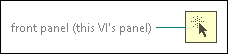

Generate Front Panel Activity Function
Owning Palette: Dialog & User Interface VIs and Functions
Requires: Base Development System
Programmatically generates front panel activity so any VI execution halted by the Wait on Front Panel Activity function continues executing. No actual changes occur on the front panel.

 Add to the block diagram Add to the block diagram |
 Find on the palette Find on the palette |